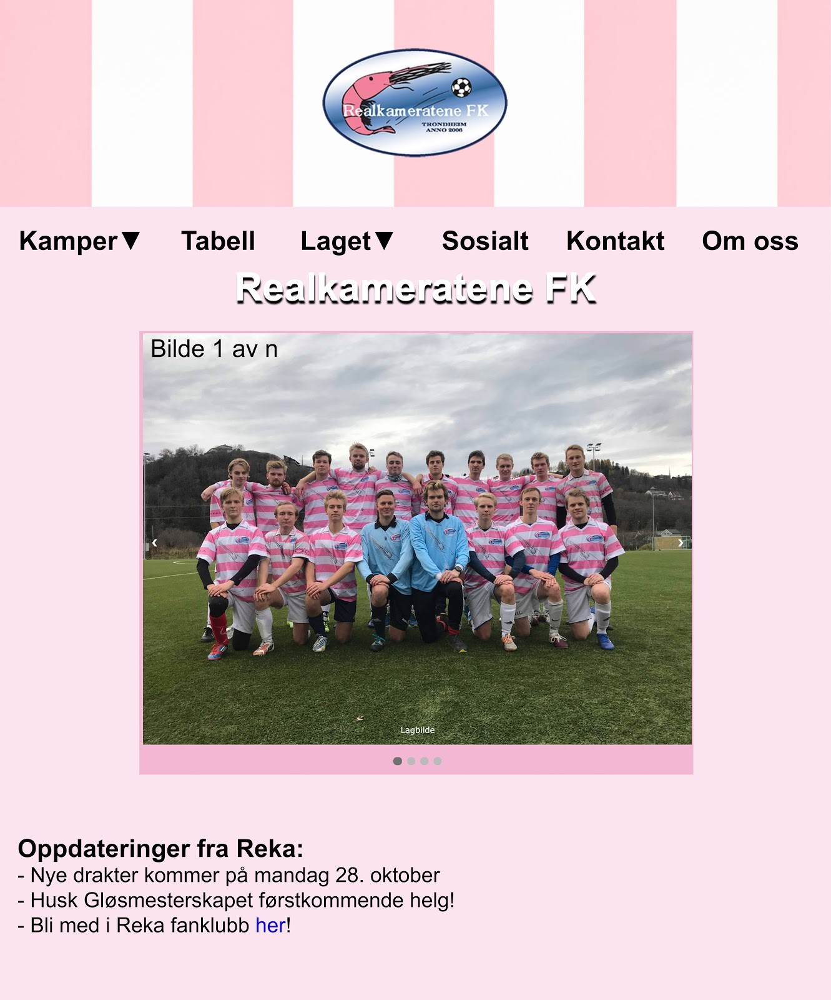
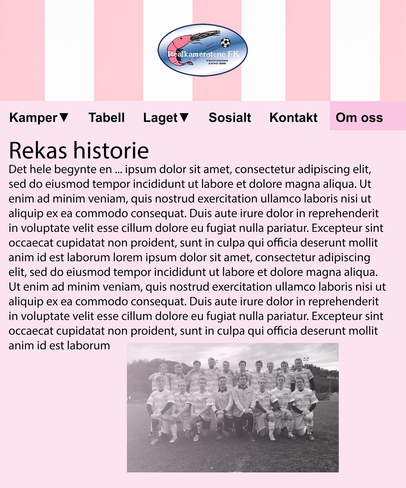
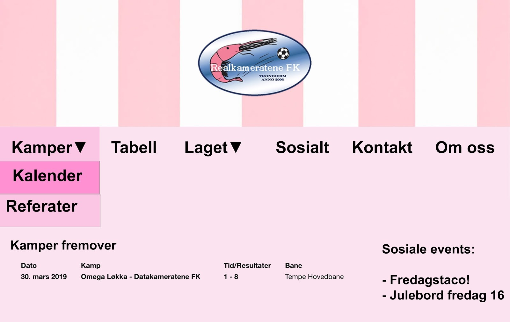
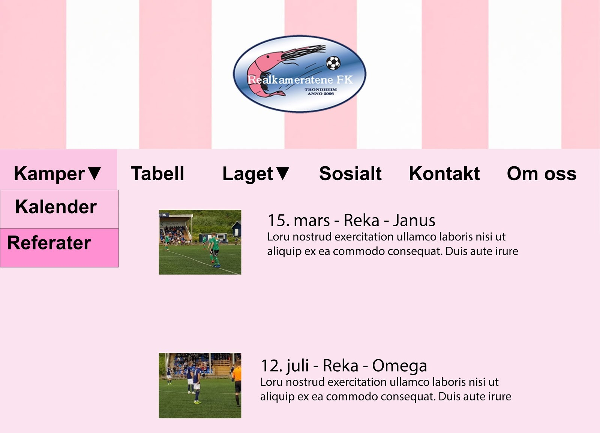
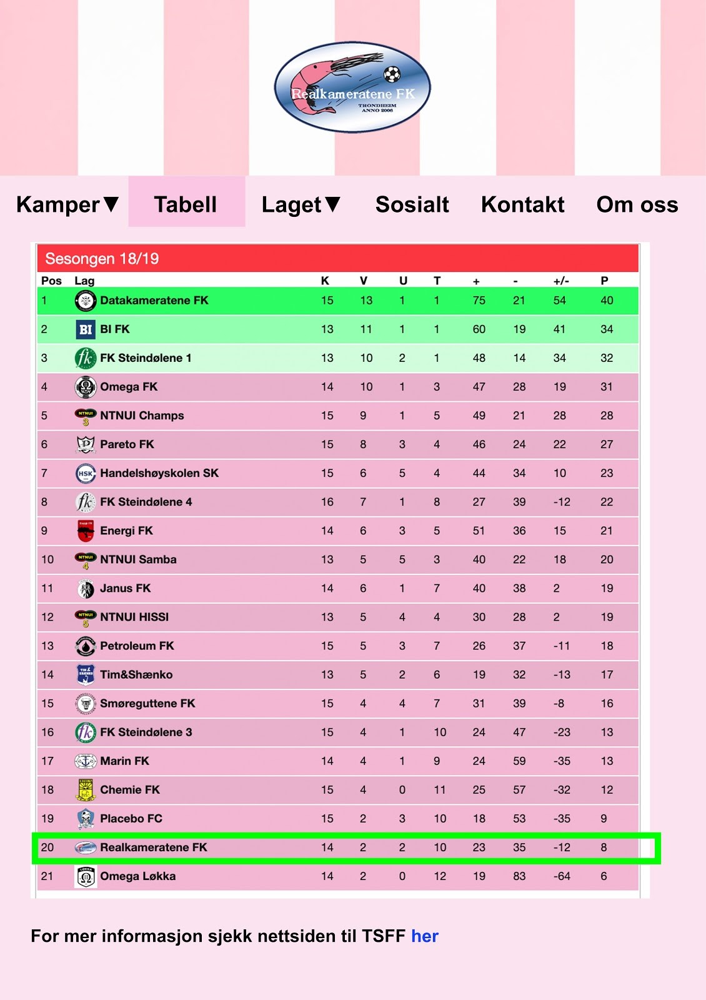
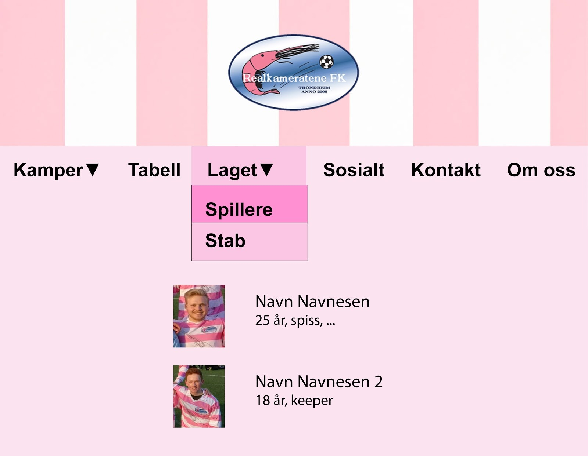
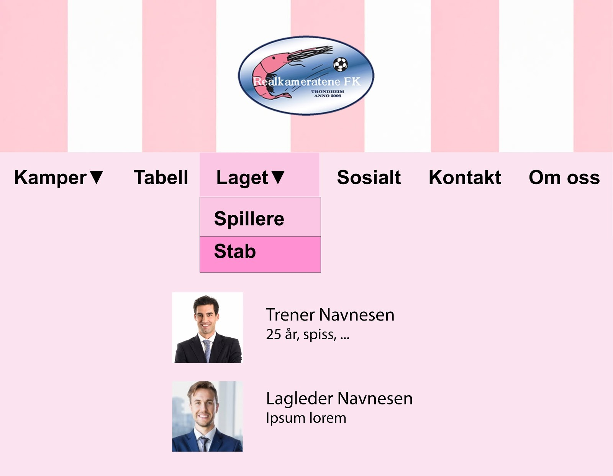
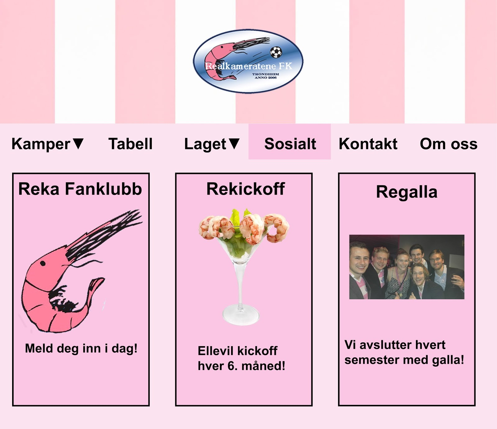

Hva må med?
The plan must cover all of the following:
- A complete “to-do” list of all files you need to create, including HTML files, CSS stylesheets, part-HTML and JavaScript files used for modularity, GIFs for buttons, JPEGs from a digital camera, etc.
- An organizational scheme for the files. However, this may not be the same as your organizational scheme for the website! For example, often all the navigational buttons will be put in a folder called "buttons," but that scheme obviously has nothing to do with how the content of the website is organized. Thus, a common technique
- A person that is assigned to be responsible for each file in the complete list. That way there will be no confusion about who is doing what, and everything will get done. An exception to this may be the external style sheet - defining CSS for the project may be a lot of work, and it is more equitable to share this task with the partners.
- A deadline for each file to be completed. This is not the same as the coding deadline! It's true that everything must be completed by the coding deadline, but (as we described earlier) you want to be able to keep track of whether you are on schedule or not. Resolve to check on each other's progress. Include time for testing (P4).
Administrative detaljer:
Klientens Navn: Reka (Realkameratene FK)
Navn på nettsiden: Reka FK
Kontaktperson: Johannes Padel og Endre Urheim
Hensikt, mål og målgruppe
Målet med denne nettsiden er at den skal fungere som en plattform for fotballklubben der det skal bli spredd relevant info og nyheter om laget. Målet er en brukervennlig side med alt av nyttig innhold lett tilgjengelig i tillegg til en innbydende layout. Vi skal ha et gjennomgående tema som passer til Realkameratene med hvite og rosa farger. Målgruppen for denne siden er i hovedsak ment for studenter i Trondheim med interesse for studentligaen og Reka, samt familie som ønsker å komme på kamper og se resultatene. Vi ønsker også at nettsiden skal bidra til å få flere til å møte opp på kamp for å støtte laget, gjerne de nye studentene på fysikk og matematikk.
Navigeringsstruktur
Som navigerings struktur har vi valgt å bruke en “Klikk struktur” (clique structure) Der vi på hovedsiden vil ha en meny som det skal være mulig å navigere seg til alle sidene. Denne hovedmenyen vil også være synlig på alle sidene. Den vil fungere som en roll-over meny der man får flere valg dersom man trykker på hovedkategorien. Grunnen til at vi valgte denne måten å navigere på er fordi det skal være intuitivt og enkelt for alle å bruke. Det skal også være enkelt å navigere fra de ulike sidene. En annen fordel med denne typen navigering er at man enkelt kan finne det innholdet man ønsker, uten å måtte lete gjennom hele siden.
Layout og utseende
Vi skal ha et rosa tema ettersom det passer til reka-logoen og reka-drakta. Vi har valgt nyanser av #F2B7D3 som bakgrunnsfarger. Bak tekst skal vi ha en lys farge for å øke lesbarheten, og vi har valgt #FAE4EF. Tekstfargen skal være mørke nyanser av #B7D3F2 som er i triadisk harmoni med #F2B7D3. Disse står altså i kontrast til hverandre og bør derfor lett å lese teksten. Disse to fargekodene og deres nyanser skal være fargetemaet for hele siden. For at det skal være lett for leseren å se linker bør de være en sterk blåfarge med understrek, ettersom det er det som er mest vanlig og derfor lett gjenkjennelig #finnfarge. Vi vil ha navigasjonsmenyen horisontalt helt øverst på siden, slik at den alltid er enkel å finne. Når man blar nedover på siden skal navigasjonsmenyen bli liggende øverst slik at man slipper å bla til toppen av siden for å finne navigasjonsmenyen. På navigasjonsmeyen skal logoen stå helt til venstre og være link til hjem-siden (index.html). I bunn av siden skal vi ha en footer med link-ikoner til facebook- og instagamsiden til reka.
Innhold
-
Generelt
På alle deler av nettsiden vil det være en header som inneholder reka-logoen og en meny med direkte lenker til de ulike sidene som listes opp under. I tillegg skal det alltid være en footer nederst på siden med kontaktinfo og lenker til Reka sine sosiale mediekanaler i form av ikoner for de respektive sosiale mediene. Disse elementene er med for å gjøre nettstedet oversiktlig og brukervennlig, noe klienten er svært opptatt av. De fleste sidene kommer til å inneholde noen bilder. Disse kommer til å forminskes i forhold til lagringsplass, slik at sidene lastes inn fortere. Alternativt kan de lagres som thumbnails om sidene lastes for tregt, men siden ingen sider vil ha veldig mange bilder blir dette antagelig ikke nødvendig.
-
Hjemmeside
Det første som kommer opp når man går inn på Rekafk.no vil være hjemmesiden. I tillegg er den alltid tilgjengelig ved å trykke på ikonet til venstre i menyen. På hjemmesiden kommer det til å være en bildevisning som rullerer sekvensielt over skjermen med utvalgte bilder fra klienten. Vi vil bruke Javascript for å få til dette. Under bildene står de siste eller mest interessante oppdateringene fra laget. Hjemmesiden vil holdes enkel, med lite tekst for ikke å overvelde nye besøkende. I stedet for mye tekst vil det under siste nytt oppmuntres til å utforske nettsiden og spesielt sjekke ut sosialsiden for å bli medlem av Reka Fanclub. Bildevisningen vil ha samme bredde som menyen med de andre elementene plasser ved siden av hverandre som vist på bildet. Hjemmesiden er designet for å appellere til et ungt publikum ved at det er lite tekst og heller fokus på det visuelle. Dermed hjelper det å tiltrekke nye fans og overlater mer utfyllende informasjon til de andre delene av nettstedet.
 -
Om oss
Om oss siden inneholder tekst og bilder i form av en artikkel som går gjennom Rekas historie og tradisjonsrike kultur. Klienten kommer selv til å lage innholdet som ønskes på denne siden, som deretter formateres av oss til å passe inn med det gjennomgående temaet til nettsiden. Under artikkelen vil det (ved behov) legges ved en “ofte stilte spørsmål” seksjon etter hvert som spørsmål kommer inn. Med denne siden jobber vi mot målet om å tilby all nødvendig og ettertraktet informasjon som ikke inngår i noen av de andre sidene. Artikkelen på siden kommer til å være humoristisk og ha passende bilder for å gjøre laget enda mer attraktivt for spesielt interesserte lesere.
 -
Kamper
Denne siden vil i rollover-menyen være delt inn i to seksjoner: Kalender med kommende kamper og kampreferater fra tidligere kamper. Kalendersiden kommer til å være veldig simpel, uten noe unødvendig innhold. Kommende kamper vil være listet under hverandre i kronologisk rekkefølge med uthevet dato. Annen informasjon som listes opp etter datoen vil være tidspunkt, sted og motstander. I tillegg vil eventuelle sosiale events ligge i kalenderen med lenke til “Sosialt” siden. Under kampreferater brukes en vertikal grid-layout med nyligste kamper øverst. Til venstre ligger et bilde fra kampen, med overskrift og kort sammendrag av kampreferatet ved siden av. Ved å trykke på overskriften kommer man til en egen html-fil med referatet som kommer fra lagets referent etter hver kamp. Hvert kampreferat vil ha samme layout for å kunne postes på nettsiden så fort som mulig. Denne layouten innebærer et større bilde oppe i venstre hjørne, men overskrift og tekst til høyre, som fortsetter under avhengig av lengden på det innsendte referatet. “Kamper” siden er basert på klientens ønske om at informasjon skal oppdateres så fort som mulig og være lett å finne fram til på siden.
  -
Tabell
Tabellen som vises på denne siden vil være tilsvarende tabellen som publiseres og oppdateres fortløpende på TSSF sine sider. Formatet vil likne på denne, men justeres til å passe med vår fargekode og struktur. Reka skal være uthevet for å lett se deres plassering, og de andre lagnavnene skal inneholde lenker til deres respektive facebook/hjemmesider som åpnes i et nytt vindu. For mer informasjon om toppscorerlister og lignende vil det være lenke til TSSF sin hjemmeside under tabellen, der all denne typen informasjon finnes. Denne lenken åpnes også i nytt vindu. Tabellsiden bygger videre på klientens ønsker om lett tilgjengelig informasjon, uten masse unødvendig tekst.
 -
Laget
Laget tar i bruk en liknende struktur som kampreferatene.Når man holder musa over “laget” i menyen skal det vises “spillere” og en “stab”. Trykker man på spillere vil man se til venstre er et portrett av spilleren og ved siden av står grunnleggende informasjon som navn, alder og posisjon, etterfulgt av en kort tekst om spilleren. Spillerprofilene blir såpass korte at det ikke blir nødvendig å lage en egen side per spiller. I stedet er de plassert under hverandre i alfabetisk rekkefølge med et lite mellomrom før hver spiller for å gjøre det mer oversiktlig. Lignende profiler vil også være der for trener, økonomisjef, lagleder og fanklubb-sjef. Siden skal hjelpe å øke interessen blant bekjente av spillerne, samtidig som den gjør det ekstra stas for spillerne selv når de kan se sin egen spillerprofil på nett.
  -
Sosialt
Her kommer den viktigste siden for rekruttering av nye fans. Når man går inn på sosialt er det første leseren ser et firkantet popup-vindu i midten av skjermen som ber deg melde deg inn i fanklubben (og hvordan det gjøres). Vinduet skal være stort nok til å dekke over resten av innholdet på siden. Når det lukkes inneholder siden tre elementer satt opp ved siden av hverandre. Det første skal være “Fanklubb” der man vet trykk kommer inn på en side med mer utfyllende info om fanklubben. Deretter står “Rekickoff” som er en annen side med info om lagets kickoff som finner sted hver sjette måned. Til slutt kommer “Regalla” med en liknende side om gallaen som finner sted i slutten av hver sesong. Hvert element vil inneholde et bilde øverst, overskrift og en kort beskrivelse for å få folk til å klikke seg videre. Hovedfokuset her er å virkelig få folk til å ville være med på det sosiale livet til Reka. Alle fordelene med å være med i fanklubben skal komme tydelig fram i teksten, og arrangementbeskrivelsene skal være svært reklamerende med samme type layout som kampreferatene. Her er det viktig å skaffe gode bilder som får fram stemningen med laget.
 -
Kontakt
Kontakt delen av menyen er ikke lenket til en egen side, men åpner heller et annet popup-vindu i samme stil som det beskrevet over. I vinduet står lagets kontaktinformasjon, i tillegg til en rute under som kan fylles inn og sende mail direkte til laglederen. Denne funksjonen vil hjelpe med å oppdatere “Ofte stilte spørsmål” seksjonen og tilgjengeliggjøre sjefene for laget. Kommunikasjon er viktig både for klienten og for potensielle nye medlemmer.
Minstekrav
Websiden er nødt til å inneholde fire forskjellige javascript applikasjoner, og vi planlegger å få til dette på følgende måte:
Petter og André planlegger å implementere følgende:
- En javascript funksjon som skaper et slideshow på forsiden. Dette skal være mange forskjellige bilder fra diverse kamper til fotballklubben. Dette slideshowet skal være random, og bildet skal dynamisk byttes hvert 10 sekund. Det skal også være mulig å klikke på neste bilde om man synes 10 sekunder er for mye. Dette vil øke brukerenes nysgjerrighet, og kanskje gi de en ekstra motivasjon til å besøke de andre delene av siden. Bildene som skal vises trenger ikke kun å være fra kamper som Reka FK har spilt, men like gjerne være spillerportretter og evt. bilder fra sosiale sammenhenger der spillerne har vært sammen
- En javascript funksjon som øker funksjonaliteten og minsker antall klikk som kreves med en roll over menu. Den fungerer slik at når man holder over et element i navigasjonsbaren, og de elementene som kan nås direkte herifra vil komme under. Dette vil spesielt være nyttig i kampreferat.html, der man kan gå direkte til et spesifikt kampreferat uten å måtte bla mye nedover. Dette kan også brukes på spillere.html, der man kan inndele de etter første bokstaven i etternavnet, og sette opp en link direkte til spillere som mest sannsynlig er langt ned på siden fordi de har sent etternavn.
Sander, Jenny og Inger planlegger å implementere følgende:
- En javascript funksjon som er plassert i om.html. Det den skal gjøre er at når noen bruker "kontakt", så skal det poppe opp et vindu som forteller at Reka FK nå har blitt kontaktet, og at du skal snart få svar. Vi vet at de ikke kommer til å faktisk bli kontaktet da det krever litt mer backend, men vi kommer her til å fokusere på frontend-delen for å skape en mer realistisk brukeropplevelse.
- En javacript funksjon som forandrer språket på alle sidene. Vi skal ha et britisk og et norsk flagg øverst til høyre hjørne, hvor når man trykker på det britiske flagget så skal alt bli til engelsk. Dette er fordi Realkameratene FK er linjeforeningslaget til Fysikk og matte-studiet, og der går det mange utvekslingsstudenter. Derfor er det svært viktig at vi også når ut til disse gjennom en mulighet for engelsk språk. Vi kunne selvfølgelig ha skrevet alt på engelsk, men vi mener at nettsiden vil nå ut til enda flere og være enda mer attraktiv ved en slik funksjonalitet som dette.
Det er enda en funksjonalitet som vi ønsker å få på plass på siden, men som vi må avgjøre om egentlig er nødvendig. Det er en javascript funksjon som skal fungere inne på spillere.html, og rezise bildene når man holder musen over det respektive bildet. Bildet vil da bli større, og det vil dermed bli enklere å se hvordan spilleren ser ut. Dette vil gi siden litt mer liv, samtidig som bildene ikke kommer til å ta så altfor stor plass på nettsiden i utgangspunktet.
I tillegg til dette skal vi lage en javascript funksjon som skal få en reke til å bevege på seg
Plan
Vi skal følge organisasjonsordningen som er nedenfor til å lage og lagre våre filer og arbeidsdivisjonstabellen for å holde følge med hvem som lager hva og når
Organisasjonsordning
Alle de følgende filene vil bli lagret i en folder, og dette vil bli skapt til neste fase av prosjektet
Liste med alle filer og folders:
- index.html
- kamper.html
- kampreferat.html
- kalender.html
- om.html
- footer.html
- sosialt.html
- tabell.html
- spillere.html
- img/
- reka_logo.png
- faveicon.ico
- portrett_1.jpg
- portrett_2.jpg
- ...
- portrett_n.jpg
- scripts/
- slideshow.js
- popup.js
- change_language.js
- roll_over_menu.js
- rezise_picture.js
- logo_wiggle.js
- style.css
| Filnavn | Beskrivelse | Hvem | Tidsfrist |
|---|---|---|---|
| index.html | Hjemmesiden til nettsiden | André | 25.10.2019 |
| kamper.html | En oversikt over alle kampene til fotballaget. | Petter | 27.10.2019 |
| kampreferat.html | Her skal alle kampreferatene stå. Først skal det kun være innledning, men man kan trykke på "les mer" og få et lenger referat. | Jenny | 27.10.19 |
| om.html | En liten historie om Reka, hvem kontaktpersonene er og hvordan de skal kontaktes. | Sander | 27.10.2019 |
| tabell.html | En tabelloversikt fra ligaen som Reka spiller i. | Inger | 28.10.2019 |
| spillere.html | En oversikt over alle spillerne på laget med navn, alder, posisjon og bilde. | André og Petter | 30.10.2019 |
| kalender.html | En fullstendig oversikt over alle kampene til Reka på kalenderformat. | Sander og Jenny | 01.11.2019 |
| sosialt.html | Oppdateringer om hva som skjer sosialt for Reka, og gjerne også noen bilder. | Inger | 02.11.2019 |
| slideshow.js | En javascript funksjon som lager et slideshow på forsiden. | Jenny | 29.10.2019 |
| popup.js | En javascript funksjon som skaper en pop-up når noen kontakter Reka. | André | 01.11.2019 |
| change_language.js | En javascript funksjon som skaper en knapp som kan trykkes på for å bytte språk. | Inger og Sander | 02.11.2019 |
| roll_over_menu.js | En javascript for en opptrekksmeny. | André og Petter | 25.10.2019 |
| resize_picture.js | En javascript funksjon for å rezise bildene som musen er over. | Petter | 02.11.2019 |
| logo_wiggle.js | En javascript funksjon som skaper en bevegende reke. | Sander | 10.10.2019 |
| style.css | CSS filen som står for all designet til nettsiden. | Alle | 02.11.2019 |
| Slutt kontroll | Sjekke at all koden, CSS og javascript fungerer som den skal | Alle | 10.11.2019 |